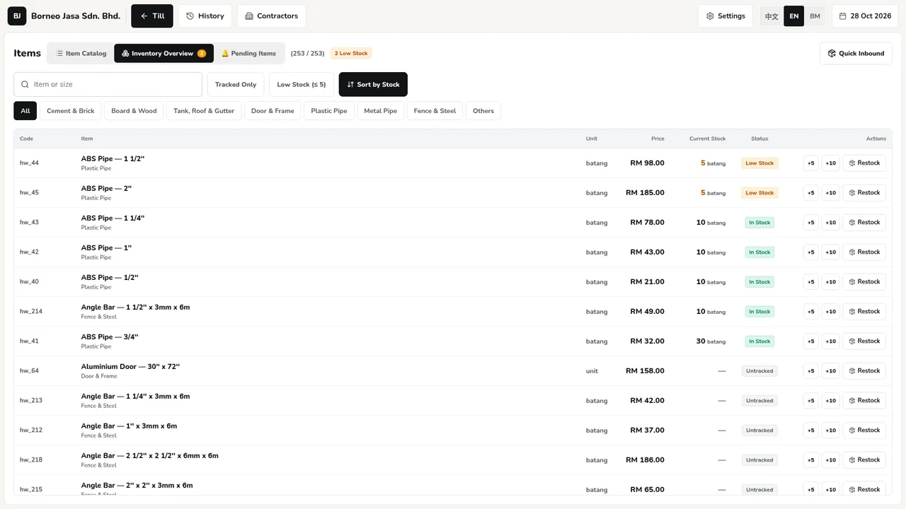
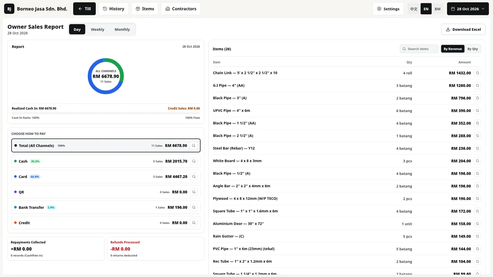

Client project · in-store rollout Nov 2026
BJ-POS
An offline point-of-sale and inventory system for a hardware and building-materials shop in Keningau, Sabah.
RepoDesktop app · demo video coming

The problem
The shop kept its sales and stock on paper. That makes simple questions slow to answer: what is left on the shelf, what sold today, and which contractor still owes money. The counter is busy, goods are sold by the bag, the bundle, the piece, the kilo and the foot, and a sale cannot wait for a network connection.
What it does
- A touchscreen till with large controls: category rail, product grid and cart, priced per bag, bundle, piece, kg, ft or metre.
- Deducts stock on every sale and blocks a sale that would take a tracked item below zero. Voiding a sale puts the stock back.
- Inventory overview with Low Stock, In Stock and Untracked status against a low-stock threshold (5 by default).
- Cash, card, QR, bank transfer and contractor credit (hutang); thermal receipts, and A4 delivery orders printed as a store copy and a customer copy.
- Owner sales report by day, week or month. Close Day writes an Excel workbook and queues it for a private Google Drive folder with a SQLite snapshot.
- Screens in Chinese, English or Malay.
How it works
- Vue tillScreens, cart and dialogs. Talks to exactly one repository interface.
apps/pos - Domain rulesMoney, quantities, pricing, orders, receipts and stock planning. Pure functions, no I/O.
packages/core - RepositorySQLite schema, migrations and SqlPosRepo, written with Drizzle ORM.
packages/data - IPC write queueIn Electron, statements go over IPC to the main process through one shared queue.
apps/pos/src/ipc-driver.ts - SQLite filebetter-sqlite3 in the main process writes the shop database on the till itself. In browser development the same repository runs on sql.js.
apps/pos/electron/main.ts
Close Day: Excel workbook + SQLite snapshot → outbox → Google Drive, retried while the till is offline.


Screenshots are from the repo's browser development build with its built-in product list. Stock levels on the inventory screen were set with the app's own +5 / +10 buttons.
Hard parts and decisions
- No floating-point money
- Money is stored as integer cents and measured quantities as integer milli-units, so 1.250 kg is
1250.decimal.jsis used only where the UI converts to and from those integers, so rounding happens in one place. - One write queue
- All renderer writes share one IPC queue, so two transactions can never interleave their
BEGINandCOMMIT. - Stock checked before anything is written
planStockDeductioninpackages/corechecks every line of an order against stock first and refuses with "not enough stock" if a tracked item would go negative. Items without a stock count are marked Untracked and still sell.- Stock can't be restored twice
- Voiding checks the order's current voided state inside the transaction, so a double void cannot return the same stock twice.
- The shop's day, not the clock's
- A business day ends when someone presses Close Day, not at midnight; later sales count toward the next day.
- Never lose the shop database
- Schema changes only add columns. The update script builds first and installs only if the build succeeds, so a failed build leaves the working till alone.